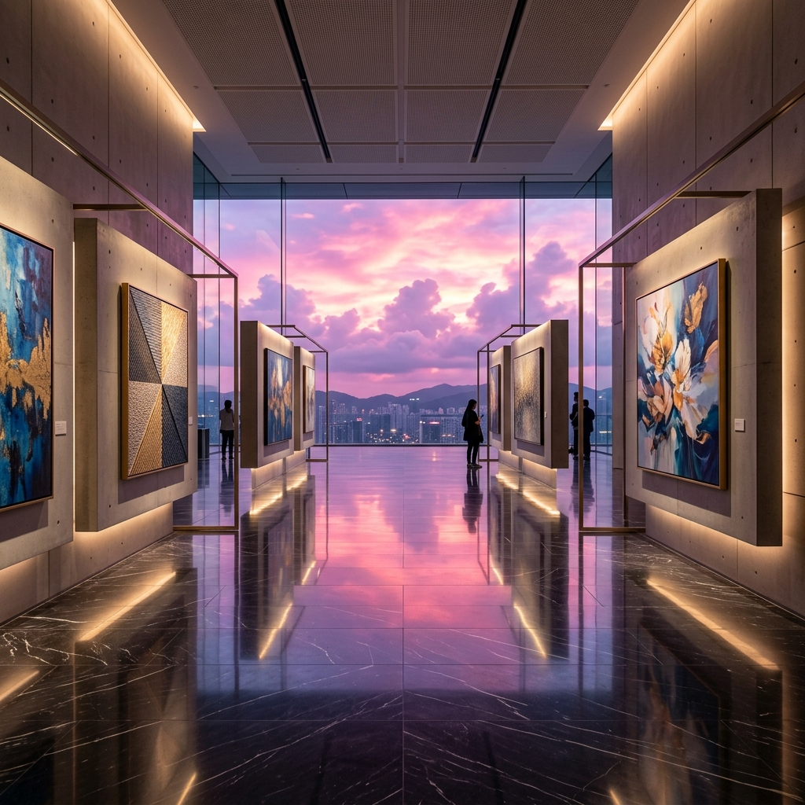
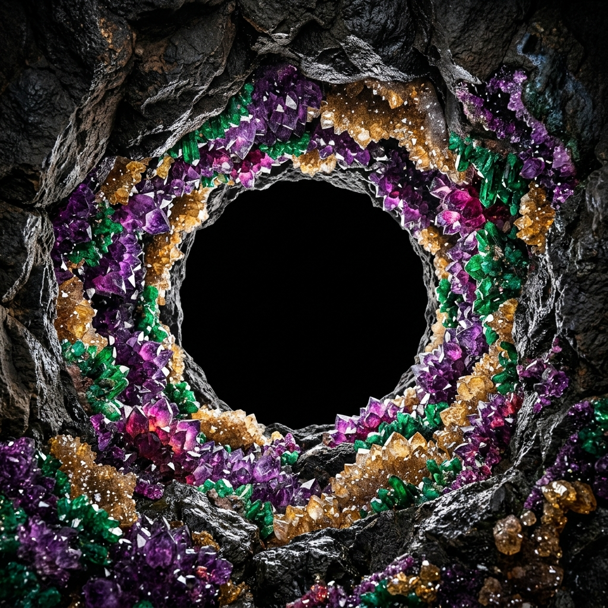

Works grown from personal memory, emotion, and the realities he observes. Layered textures, distorted forms, images that feel alive and sometimes unsettling — inviting viewers to pause and reflect.
Layered abstraction
Est. 2013 · Manila → Santa Ana, CA
Step into The Artologist.
Scroll to enter ↓
Est. 2013 · Manila → Santa Ana, CA
The Artologist.
Home of the young, emerging and mid-career contemporary Filipino artists — across four galleries, one workshop floor, and a quarterly magazine.
Find Beauty that never fades.— The Artologist, since the first room on Eisenhower St.
/01 — Programme
The 2026 calendar.
A working curatorial slate — two-women shows, mid-career retrospectives, group surveys. Every opening paired with a printed catalogue and a Quarterly feature.
-
01
14 — 28 June 2026 Shangri-La · Level 2, Unit 625↗
-
02
Now showing Shangri-La · The Art Plaza↗
-
03
2026 Shangri-La · The Art Plaza↗
-
03
 2024 → restaged 2026 Shangri-La · The Art Plaza↗
2024 → restaged 2026 Shangri-La · The Art Plaza↗ -
04
 October 2025 Ayala Malls Manila Bay↗
October 2025 Ayala Malls Manila Bay↗ -
05
October 2025 Greenhills · Learning Center↗
-
06
Ongoing Shangri-La · The Art Plaza↗
/02 — Roster
Illuminated Truths.
Seven contemporary Filipino artists, currently at Shangri-La. Each one arrived at The Artologist with a different language for the unsaid — grief, memory, devotion, vulnerability — and stayed.
Philosophical, surreal, figurative work exploring existence, identity, suffering, transformation. The crown — "Anastasia" — recurs as a symbol of rebirth, transcendence, inner sovereignty.
Surrealism · symbolismNavigates cultural heritage, folklore, identity. Acrylic, sumi-e ink, mixed media — epoxy, wood, clay, bone, fungus. Merges Abstract Expressionism with Figurative, grounded in rural life.
Mixed media · folkloreQuiet emotional exploration of unseen realities. Angelic figures in everyday settings. Recurring wings: vulnerability and a longing for transcendence. A green-toned dreamlike stillness.
Devotional · figurativeWhere memory, emotion, and identity meet. Not the loudest, not the most polished — sincere. Pieces meant to be felt over time, not impressing at first glance.
Quiet emotionArt as a necessary process of release and reflection. Anger, pain, frustration — expressed and confronted. The work becomes a sanctuary of honesty and vulnerability.
Charcoal · catharsisConfronts the raw value of human experience. Oil, watercolour, mixed media. Surrealism, gore, the human form revealing emotions often buried — pain, vulnerability, quiet unrest.
Surrealism · oil · human form
/03 — Collection
The named catalogue.
Fifteen pieces currently available for collection across the gallery network. Acrylic, oil, mixed media. Each titled, each one-of-a-kind, each shipped with an Artologist Certificate of Authenticity.
- Teenage MotherOil on canvas
- TranquilityAcrylic on canvas
- Garden FlowersAcrylic on canvas
- Blue MondayAcrylic on canvas
- Earth Mother GaiaAcrylic pouring on canvas
- She is Worth More Than RubiesAcrylic on canvas
- A Million DreamsAcrylic on canvas
- God is GoodAcrylic / mixed on canvas
- The MountainsAcrylic on canvas
- Bird SongOil on canvas
- In the Farm 2Acrylic on canvas
- My BelovedOil on canvas
- ExuberanceAcrylic on canvas
- Hibiscus Perfect FlowersAcrylic on canvas
- Purr-fect LoveAcrylic / mixed media on canvas
/04 — Where we are
Four addresses. One platform.
A curatorial flagship in Mandaluyong, a learning HQ in Greenhills, a mall-front in Manila Bay, and a US bridge in California.
Shangri-La Mall
The Art Plaza.
Level 4, Shangri-La Plaza Main Wing
EDSA, Mandaluyong
- Tel8696-3244
- Cel0945-511-2568
Greenhills
Learning Center.
#81 Xavier St., Unit 203
Greenhills, San Juan City
- Tel8634-0100
- Cel0916-567-3351
Ayala Malls
Manila Bay.
Filipino Village · Unit 2162-16
Second Floor, Ayala Malls Manila Bay
- HoursMall hours, daily
Santa Ana
California.
#920 E Santa Ana Blvd
Santa Ana, CA 92701
- Tel(714) 845-7589
/05 — Learn here
Workshops led by working artists.
Eight curriculum tracks for ages 5 and up, taught by Artologist gallery artists. Studios in Greenhills and Manila Bay.
-
/01
Drawing
All ages
Foundations to intermediate — graphite, charcoal, ink.
Reserve → -
/02
Watercolour
5+
Colour theory, washes and brushwork.
Reserve → -
/03
Acrylic on Canvas
5+
Landscapes, florals, seascapes, still-life, portraiture.
Reserve → -
/04
Oil on Canvas
5+
Classical to contemporary techniques.
Reserve → -
/05
Ceramic Painting
5+
Glaze and decorate bisque-fired functional pieces.
Reserve → -
/06
Canvas Bag Painting
5+
Wearable art — totes and pouches.
Reserve → -
/07
Kids Craft
5-10
Mixed-media — ceramics, wood, acrylic, canvas.
Reserve → -
/08
Combination Package
₱ 10,500 · 6 sessions
Mix and match across any workshop. The best entry point — and the most-booked.
Reserve seat →
/06 — Commission
Painted by an Artologist artist.
Painted by an Artologist artist.
For you.
Our signature programme. Hand-painted handbags, canvases and ceramics commissioned from our gallery roster. One subject. One artist. One piece.
- 01Choose your medium — handbag, canvas, ceramic, mixed media
- 02Choose your artist — from our 200+ shown roster
- 0330 to 45 day delivery — Manila and US shipping
/07 — Read
The Artologist Quarterly.
Four issues a year. Long-form interviews, studio visits and exhibition essays from our curators. Printed in Manila, shipped to subscribers in PH and the US.
Subscribe ↗
/08 — Visit
Come in.
Come in.
We open at 10.
Walk-ins welcome at every location. Workshops by reservation. Collectors — DM the gallery for an early preview of any opening.